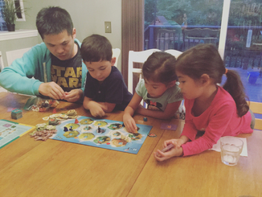

In trying to be a good dad1, the instructor has started playing board games with his kids. Besides classics like Candy Land, they have been playing newer games such as Catan Junior in hopes of graduating to more sophisticated games such as Settlers of Catan.
In Settlers of Catan, players attempt to dominate an island by building roads, settlements, and cities across the whole board2. One way to score two points in this game is to build the longest road3. Unfortunately, for young players determining the longest road can be difficult since the road network can be quite complex as shown below.
Your job is to help Abigail, Madeline, and Caleb (the instructor's children) by writing a program that determines the longest road on the game board. To simplify the problem, we will just consider computing the longest road for a single player:
You are given a set of nodes (cities)
You are given a set of edges (road segments) of length 1 connecting the nodes
The longest road is defined as the longest path within the network that doesn't use an edge twice. Nodes may be visited more than once, however.
For example:
o o--o o
\ / \ /
o--o o--o
/ \ / \
o o--o o--o
\ /
o--o
In the network above, the longest road is length 12.
This is based on 539 - Settlers of Catan problem on the UVa Online Judge.
The input will contain multiple test cases. The first line of each test case
contains two integers: the number of nodes n (2 <= n <= 25) and the number
of edges m (1 <= m <= 25). The next m lines describe the undirected
edges, where each edge is given by the numbers of the two nodes connected by
it. The nodes are labeled from 0 to n - 1 and have degress of three or
less. The network itself is not necessarily connected.
The input will be terminated by two values of 0 for n and m.
3 2
0 1
1 2
15 16
0 2
1 2
2 3
3 4
3 5
4 6
5 7
6 8
7 8
7 9
8 10
9 11
10 12
11 12
10 13
12 14
0 0
For each test case, output the length of the longest road.
2
12
For each input test case, your solution should have the following targets:
| Time Complexity | O(V*(V+E)), where V is the number vertices and E is the number of edges in the graph. |
| Space Complexity | O(E), where E is the number of edges in the graph. |
Your solution may be below the targets, but it should not exceed them.
To submit your work, follow the same procedure you used for Reading 01:
$ cd path/to/cse-30872-su25-assignments # Go to assignments repository
$ git switch master # Make sure we are on master
$ git pull --rebase # Pull any changes from GitHub
$ git checkout -b challenge16 # Create and checkout challenge16 branch
$ $EDITOR challenge16/program.py # Edit your code
$ git add challenge16/program.py # Stage your changes
$ git commit -m "challenge16: done" # Commit your changes
$ git push -u origin challenge16 # Send changes to GitHub
To check your code, you can use the .scripts/check.py script or curl:
$ .scripts/check.py
Checking challenge16 program.py ...
Result Success
Time 0.03
Score 6.00 / 6.00
$ curl -F source=@challenge16/program.py https://dredd.h4x0r.space/code/cse-30872-su25/challenge16
{"result": "Success", "score": 6, "time": 0.03198695182800293, "value": 6, "status": 0}
Once you have committed your work and pushed it to GitHub, remember to create a pull request and assign it to the instructor.